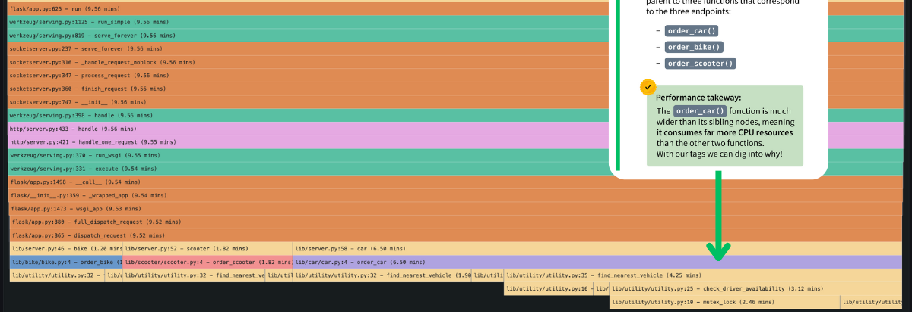

RAG 다음의 문제,
무엇을 기억하고
무엇을 다시 확인할까?
운영 경험·자료·절차를 다음 문제에 다시 쓰는 방법
이런 불편,
없으셨나요?
트러블슈팅 경험은 자산인데,
다음 작업에서 다시 쓰기는 어렵습니다.
LLM의 답변은
context에 따라 달라집니다
LLM은 context 바깥의 사정을 스스로 확인하지 않습니다.
챗봇의 “기억”도
다시 넣어주는 context입니다
모델이 혼자 기억한 것이 아니라, 서비스가 이전 대화를 다시 제공한 결과
운영 경험은 저장만 해서는
다시 쓰기 어렵습니다
너무 큽니다
시행착오와 현재 질문에 불필요한 내용까지 포함
너무 작습니다
결론은 찾지만 전제·예외·조사 순서를 잃음
실제 질문 ①
이번 DB 장애도 지난번과 같을까?
배포 직후 API가 느려졌고,
같은 시간대에 DB 구조 변경도 있었습니다.
도구가 있어도
잘못 분석할 수 있습니다
사실인 근거로도
틀린 원인을 만들 수 있습니다
가상 예시 · 같은 30분 안에 모두 발생했지만 순서가 다릅니다.
DDL과 lock이 보였으니 migration lock이 원인
오류가 DDL보다 먼저 시작됨
과거 값이 아니라
검증 절차가 필요합니다
과거 사례는 가설의 출발점이지 현재 원인의 증명이 아닙니다.
실제 질문 ②
서버 메모리가 왜 계속 늘까?
“이미지 라이브러리에서
native leak이 있었다”
RSS 상승 = 전체 메모리 증가
보유 위치는 모름
CPU 샘플에서 이미지 경로가 큼
보유 증거는 아님
“이번에도 native leak”
검증 안 됨
CPU hot path와
메모리를 붙잡는 객체는 다릅니다

넓은 블록 = 그 호출 경로가 CPU profile에서 차지한 비중이 큼
JS Map 캐시
└─ resultCache: Map
├─ request:001
├─ request:002
└─ … 계속 증가
오래된 결과를 삭제하지 않아 객체가 계속 남음
embedding만 좋아져도
해결되지 않습니다
embedding은 “의미가 가까운가?”를 찾습니다. 하지만 이것들은 잘 모릅니다.
오히려 가장 높은 점수로 검색될 수 있습니다.
chunking은 문장을 찾지만
문서의 논리를 끊을 수 있습니다
“metadata lock이 관측됐다”
“오류 시작 이후 발생해 직접 원인에서 제외했다”
“최초 오류 시각이 다르면 가설을 폐기한다”
“최종 원인은 connection pool 고갈”
더 큰 context와 rerank,
도구 연결도 충분하지 않습니다
더 많이 넣기
관련 정보뿐 아니라 충돌·오래된 정보·앵커링도 함께 증가
순서 개선
질문과 가까운 후보를 올리지만 사실과 인과를 검증하지 않음
현재 조회
무엇을 어떤 시간 범위로 볼지는 context와 계획에 좌우
같은 실패는 다른 업무에서도 반복됩니다
| 상황 | Agent가 확인한 것 | 놓쳐서 만든 오탐 |
|---|---|---|
| 외부 callback 실패 | 환경변수 값 존재 | 실제 주소·서명·응답 시각을 놓치고 설정 누락 판정 |
| 두 KPI가 불일치 | 각 SQL 결과는 정상 | 집계 마감 시각이 다른 모집단을 직접 비교 |
| 오래된 API 이전 | 외부 access log 0건 | 내부 서비스·예약 작업 호출을 놓쳐 미사용 판정 |
| 레거시 환경 삭제 | 외부 요청 0건 | rollback·batch·내부 의존성을 놓쳐 삭제 가능 판정 |
우리가 정말 찾고 싶은 것은
서로 다른 종류의 context입니다
과거 사실
지난 장애의 실제 원인과 관측값
과거 경험
가설을 좁힌 순서와 버린 방향
실행 절차
PI·RPS·로그를 비교하는 방법과 반증 조건
현재 사실
지금 도구로 새로 확인한 지표와 로그
여기서
OpenViking
Agent를 위한 Context Database
├─ resources/ 문서·코드·외부 자료
├─ memories/ 결정·경험·사용자 맥락
└─ skills/ 반복 가능한 절차
RAG를 없애는 것이 아니라 embedding 검색 위에 구조와 계층을 더합니다.
Resource · Memory · Skill
자료
무엇이 기록되어 있는가?
경험
무엇을 경험하고 결정했는가?
방법
무엇을 어떻게 수행하는가?
저장할 때 embedding은
후보를 찾기 위한 인덱스를 만듭니다
문서·세션·Skill
구조화
의미 벡터
index
타입·위치·계층
Agent는 질문을 그대로 한 번 검색하지 않고
찾아야 할 것으로 나눕니다
이전에 무엇을 결론 냈나?
결론 · 적용 조건 · 미확정 범위
지금 무엇을 확인해야 하나?
회고 · 코드 · 로그 · runbook
어떤 순서로 검증하나?
지표 비교 · 도구 사용 · 반증 기준
왜 디렉터리를 먼저 찾을까?
모든 chunk가 한 바구니
타입과 위치를 따라 탐색
├─ memories/
│ └─ trajectories/PI분석
├─ resources/
│ └─ runbooks/database
└─ skills/
└─ health-check
L0 · L1 · L2
필요한 만큼만 읽습니다
“RDS DDL lock 분석 절차”
“PI → SQL → wait → host/user 순으로 조사”
전체 절차·근거·예외·반증 조건
처음부터 모든 원문을 context에 넣지 않습니다.
DB 질문은 이렇게 달라집니다
맞는 사실을 잘못 연결
과거 방법으로 현재 사실을 새로 검증
메모리 누수 질문도 달라집니다
원문 · 정리본 · 확정 지식을
같은 것으로 취급하지 않습니다
원본 세션·회의록·로그
정정 전 가설·일회성 수치
여러 원문을 요약·비교해
만든 후보 지식
반복 검증된 결정·절차
다음 작업의 기준
많이 기억할수록 더 헷갈립니다.
새로운 경험은 기존 기억과
비교하며 갱신됩니다
검색 경로 기록
Retrieval trajectory
└─ memories/trajectories/PI분석
└─ resources/runbooks/database
└─ skills/health-check
└─ L1 확인
└─ L2 원문
retrieval trajectory = 지금 왜 이 자료를 읽었나
답이 틀렸을 때
어디서 실패했는지 봅니다
제 OpenViking에는
운영 경험이 이렇게 쌓여 있습니다
├─ cases/
│ └─ 메모리 급상승 조사.md
├─ trajectories/
│ └─ Pyroscope 상관분석_….md
├─ preferences/
│ └─ 기술 보고 방식.md
└─ entities/
└─ service/
결론 · 적용 조건 · 미확정 범위
도구 · 순서 · 비교 대상
사실과 가설을 분리
서비스·도구·프로젝트 맥락
Resource·Skill 연결은 다음 확장 단계입니다.
하나의 장애를 왜
두 종류의 기록으로 나눌까?
그래서 무엇을 알았나?
어떻게 확인했나?
Case는 과거 판단을 비교하고, Trajectory는 검증 절차를 다시 실행하기 위해 사용합니다.
실제 파일에는 결론뿐 아니라
재사용 계약이 함께 저장됩니다
Task Signature · 언제 쓰는 사례인가
호스트 메모리 급상승과 요청 상관관계를 조사할 때
Input · 당시 질문과 전제
대상·시간 범위·조회 가능한 로그·식별자 매핑 상태
Rubric · 완료 판단 기준
상승 사실 · 요청량 · 오류 패턴 · 귀속 한계 · 다음 조사
Evidence · 실제로 확인한 것
요청 폭주와 5xx는 없었지만, 매핑 부족으로 특정 worker 원인은 미확정
Linked Experiences
연관된 후속 조사와 정정 기록 연결
Trigger · Preconditions
언제 실행하며, 어떤 profile·label·시간 범위가 필요한가
Immutable Object Boundary
profile 종류와 수치는 실제 조회값만 사용하고, in-use는 retained memory로만 해석
Procedure · 재현 가능한 조사 순서
① profile·label 확인 → ② RSS·heap·external 비교 → ③ retained stack → ④ route·로그 대조
Anti-patterns · 금지된 비약
in-use profile만 보고 특정 route의 직접 할당 원인으로 확정하지 않음
Result · Evidence
찾은 후보와 남은 불확실성을 함께 기록
다음 질문에서는 과거 답이 아니라
조사 맥락을 되찾습니다
과거 판단
확인한 결론
미확정 범위
조사 순서
Prometheus → Pyroscope
→ 로그
보고 기준
사실 · 가설
· 미확인 분리
Grafana · 로그 · 코드
과거 결론을 현재 관측과 대조
OpenViking도 만능은 아닙니다
정정·폐기하지 않으면 과거 오탐을 보존
틀린 runbook을 더 일관되게 수행
수집되지 않은 과거 profile은 복원 불가
현재 데이터 접근 가능성은 별도 확인
관리 비용
디렉터리·scope·승격·유효기간 정책이 필요
검색 비용
의도 분석·재귀 탐색·rerank는 단순 검색보다 느림
과잉 설계
정적 FAQ나 작은 문서 집합에는 단순 RAG가 더 적합
과거의 답을 복사하지 않고
과거에 배운 방법으로 현재를 검증합니다
경험 · 자료 · 절차
현재 지표 · 로그 · 코드
사실 · 가설 · 미확인 분리
좋은 Agent는 정보를 많이 넣은 Agent가 아니라,
지금 필요한 context를 선택하는 Agent입니다.